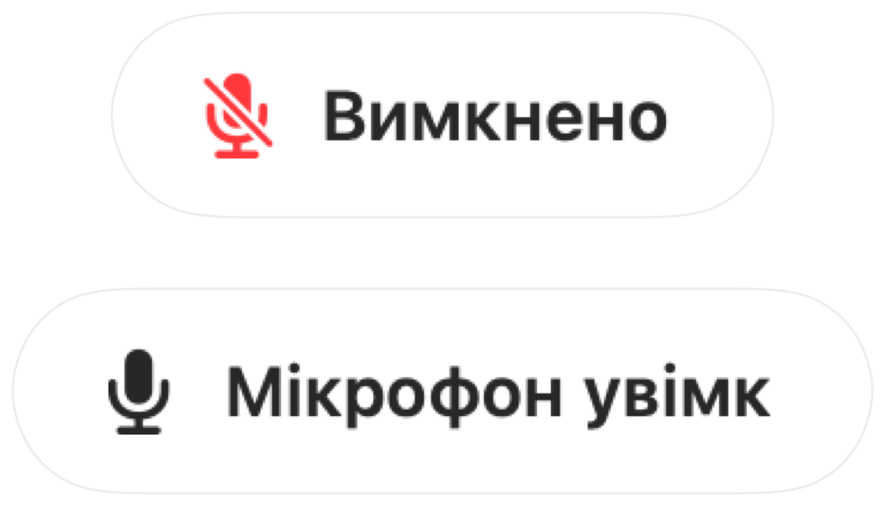

Push to talk і глобальний хоткей для заглушення Discord на Mac
Для push to talk у Discord на Mac потрібні додаткові дозволи, і ця функція не працює у браузері. Якщо ви також берете участь у дзвінках Meet або Zoom, для кожної програми доводиться запам'ятовувати окрему клавішу.
Muffle дає вам одну спільну клавішу для всіх викликів. Натисніть її, щоб заглушити мікрофон, утримуйте, щоб говорити, або натисніть ніжку AirPods.
Як налаштувати push to talk для Discord
- 1
Установіть Muffle і надайте доступ до мікрофона.
- 2
Приєднайтеся до голосового каналу в Discord.
- 3
Натисніть Control-Option-M, щоб заглушити або увімкнути звук. Утримуйте комбінацію під час заглушення, щоб говорити.
- 4
Виберіть власну клавішу в меню «Налаштування Muffle», наприклад клавішу F.

- Комбінація Muffle не потребує дозволу на керування комп'ютером у параметрах доступності.
- Зафіксуйте рівень мікрофона, щоб автопідсилення в Discord постійно його не змінювало.
Питання та відповіді
Чи працює це так само, як push to talk у Discord?
Це працює так само, але одразу для всіх застосунків. Muffle вимикає сам мікрофон, тому Discord чує тишу, доки ви не затиснете клавішу.
Чи можна заглушити Discord за допомогою AirPods?
Так. Під час голосового виклику натисніть ніжку AirPods, щоб заглушити або увімкнути мікрофон.